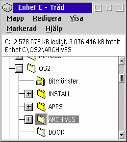
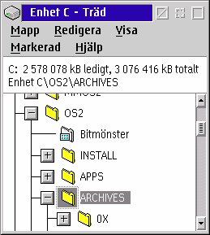

Du har troligtvis upplevt den h„r situationen en zillion g†nger: du vill expandera ett tr„d
hos en mapptr„dvisning vilken „r synlig i botten p† mappf”nstret.

Normalt, om du klickar p† "plus" tecknet intill "dll" katalogen, kommer tr„det att expandera, men du kommer inte att kunna se dess inneh†ll. Detta standardbeteende hos &os2; „r verkligen tr”ttsamt, d„rf”r att n„stan varje annan g†ng som ett tr„d „r expanderat, m†ste du scrolla ner†t manuellt f”r att verkligen se inneh†llets objekt.
&xwp; kommer nu automatiskt att scrolla ner†t i mappf”nstret om de nyligen upptr„dande
posterna b”rjar uppenbara sig utanf”r den f”r n„rvarande synliga f”nsterarean:

&xwp; g”r det genom att internt monitorera Tr„dvisningen i bakgrunden efter att du har klickat p† "plus" tecknet och sedan, s† fort som WPS „r klar med befokningen av mappen, automatiskt scrolla ner†t. Denna "monitorering" orsakar ingen ytterligare CPU last, eftersom &xwp; helt enkelt snappar upp ett enstaka f”nsters noteringsmeddelande internt. (Av det sk„let „r det totalt obegripligt att IBM inte har implementerat detta beteende tidigare.)
&xwp; kommer att g”ra de i botten dominerande posterna som visades synliga, om inte tr„det som du klickade p† inneh†ller f”r m†nga poster f”r att passa in i f”nstret. I det h„r fallet, kommer &xwp; att scrolla den post som expanderas till den ”versta toppen av den synliga f”nsterarean.
Det „r troligvis b„st att du f†r prova ut den h„r funktionen sj„lv, f”r att bli van vid den. &os2; katalogen „r en bra kandidat f”r detta. Alltnog, detta beteende kan vara lite irriterande f”rst, „r jag dock s„ker p† att efter en tid, vill du troligtvis inte vara utan det.
Du kan fortfarande avaktivera funktionen i
Globala Inst„llningar.